Install / Initial Config
(01) Download CentOS 7
Download
[1]. This is the configuration Examples for CentOS 7.x that is compatible with Red Hat Enterprise Linux 7.x. CentOS 7 was released on 7 July 2014 and will be supported untill the end of June, 2024.
Download the CentOS 7.7 ISO file for installation from the following site.
http://isoredirect.centos.org/centos/7.7.1908/isos/x86_64/
Create an Installation disk for CentOS 7
After downloading ISO of CentOS 7.x, Burn it to a DVD with an burning application to create an installation disk. If you create it with the function of Windows 7/8/10, refer to follows.
[2]. Insert an empty DVD first. Next, click right button of the mouse and select "Burn disk image".
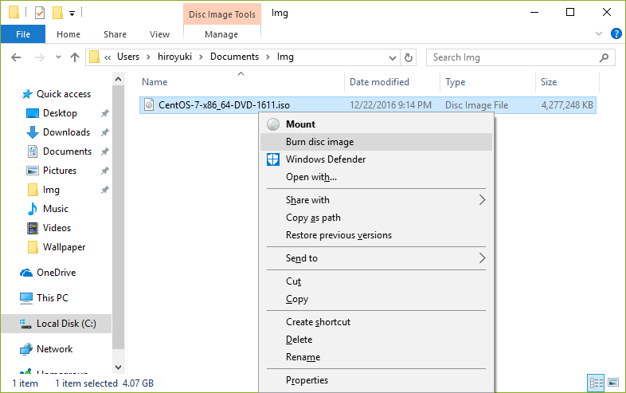
[3]. Click "Burn" button and start burning.
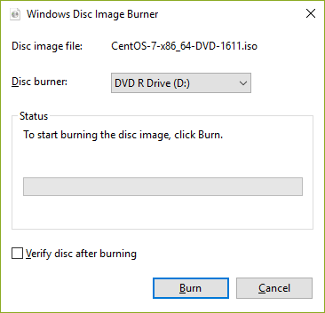
[4]. After finishing burning, eject the disk and proceed to the installation.
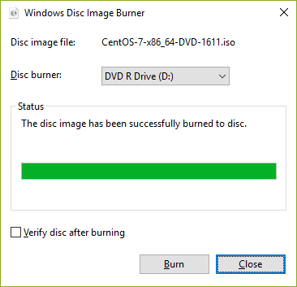
(02) Install CentOS 7
[1]. Insert CentOS install disk and start the Computer. Then, Following screen is displayed, Push Enter key to proceed.
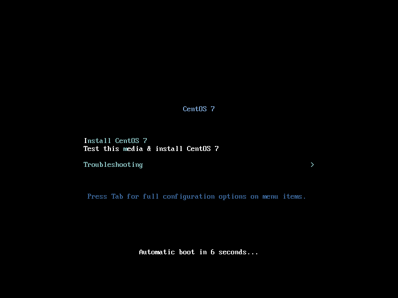
[2]. Select the language you'd like to use during the installation.
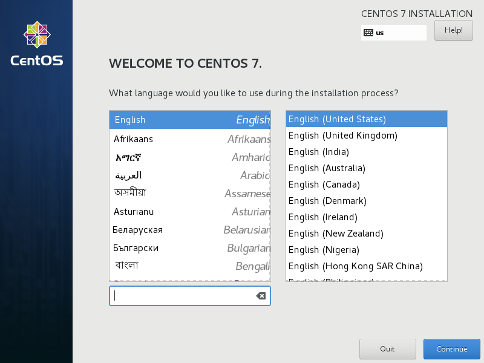
[3]. This is the default screen for some basic configuration. First, set timezone, click the [DATE&TIME] icon.

[4]. Click a point on the map you'd like to set your timezone and push [Done] button which is on the upper left.
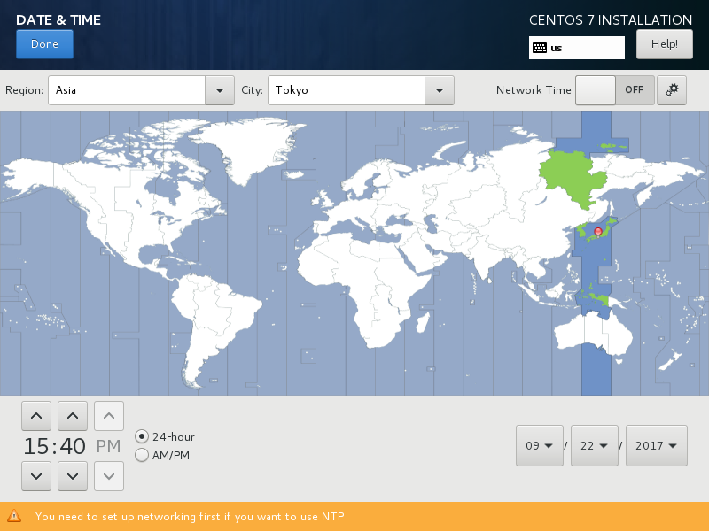
[5]. Back to the default screen. Next, click the [KEYBOARD] icon.
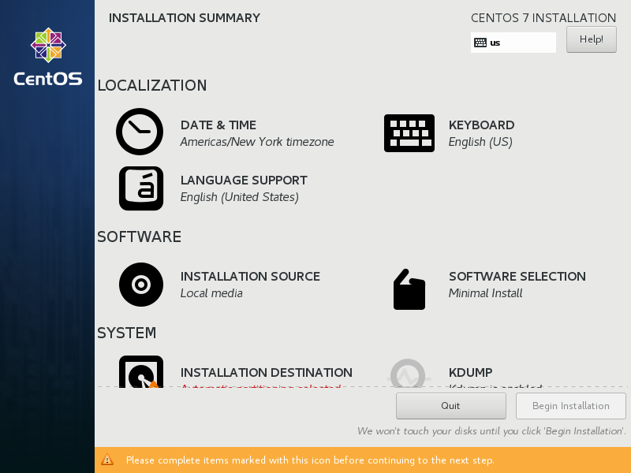
[6]. click [+] button on under-left to add another keyboard type for your language.
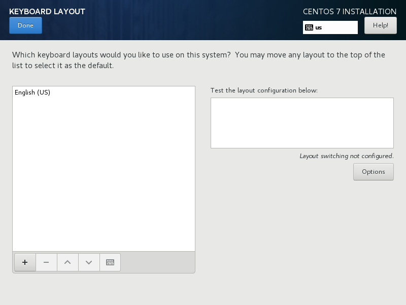
[7]. Select your keyboard type and click [Add] button.
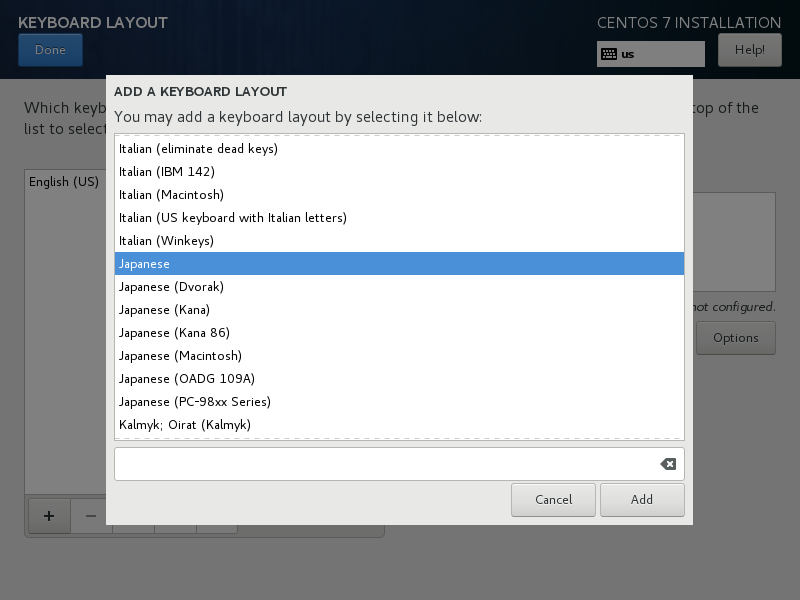
[8]. After adding keyboard layout, send up your keyboard on the top for 1st priority like follows and click [Done] button which is upper left to finish.
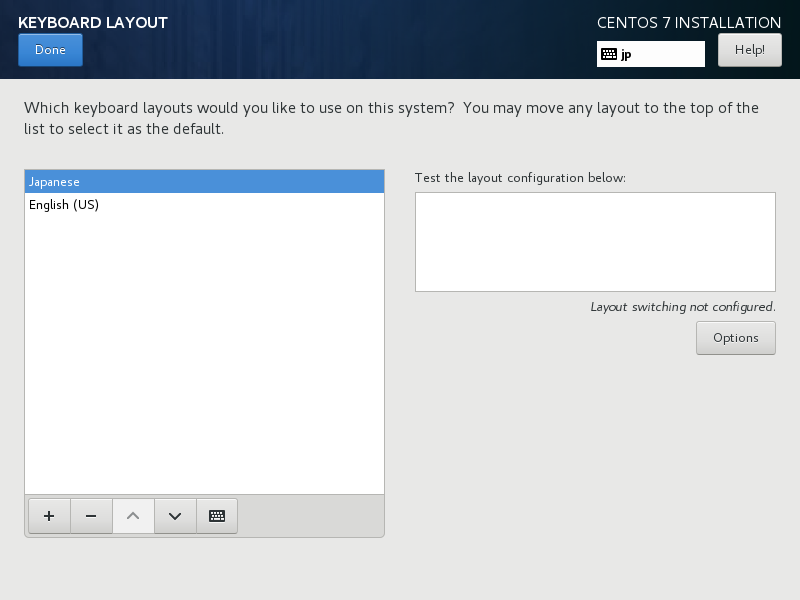
[9]. Back to the default screen. For [SOFTWARE SELECTION], it's OK to keep default because it had better to install with [Minimal Install] for initial installation. Next, click the [INSTALLATION DESTINATION] icon.
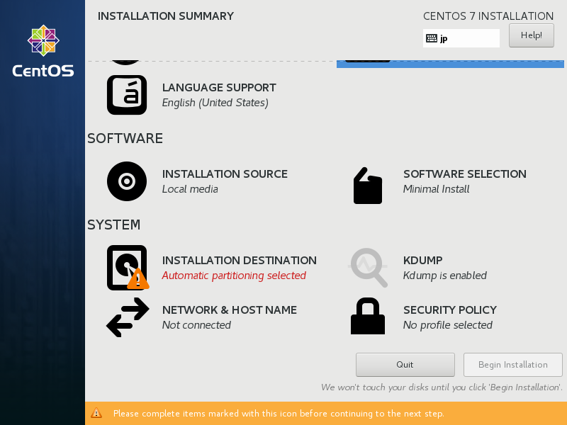
[10]. Select installation disk. Click the disk icon you'd like to install and next, click [Done] button on upper left to proceed. If you'd like to customize partition layouts, check a box [I will configure partitioning] and proceed.
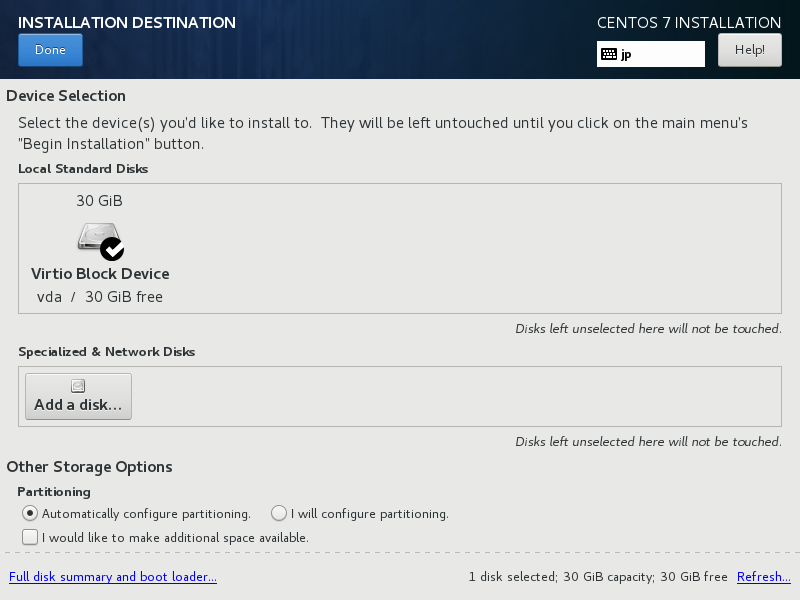
[11]. Back to the default screen. click the [NETWORK & HOSTNAME]icon.
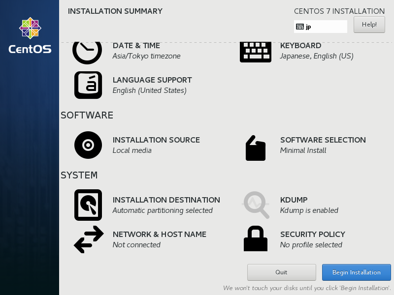
[12]. Input any hostname you like in [Hostname] field and click [ON] button on upper-right to enable networking.
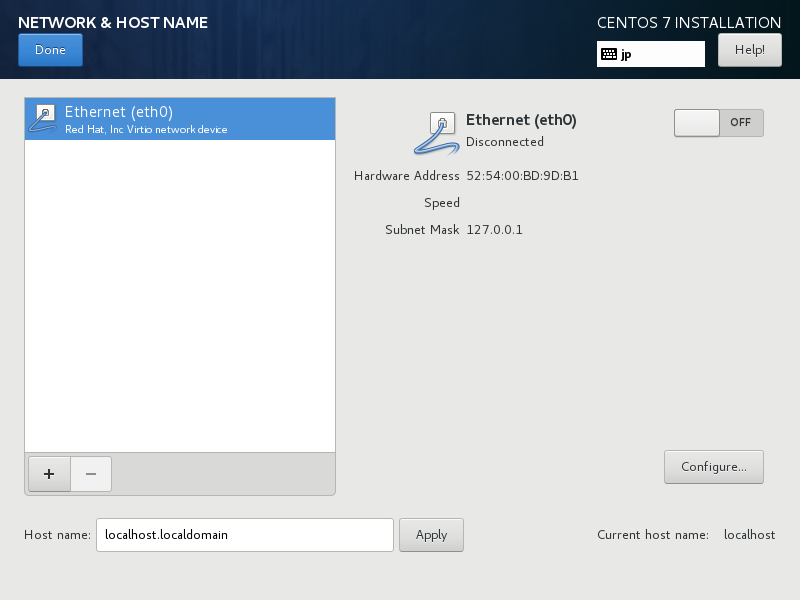
[13]. Click [Done] button which is upper left to finish.
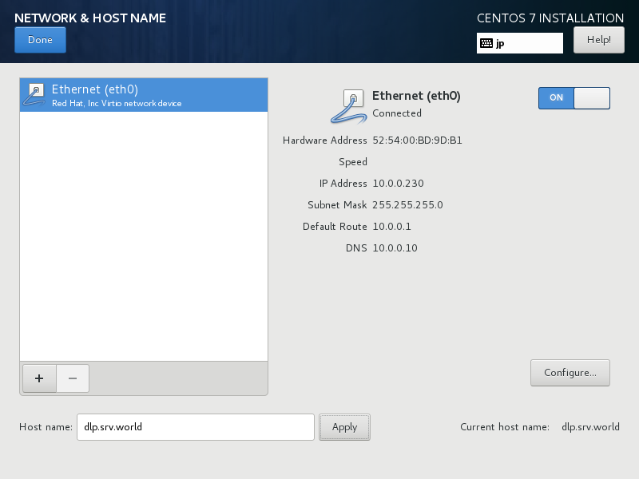
[14]. If it's OK all, click [Begin Installation] and proceed to next.
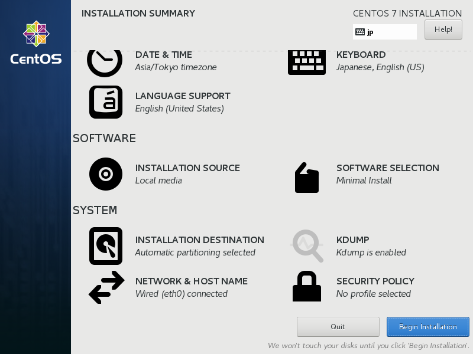
[15]. Installation starts and required to set root password and to create a common user. Click the each icon and move to configuration.
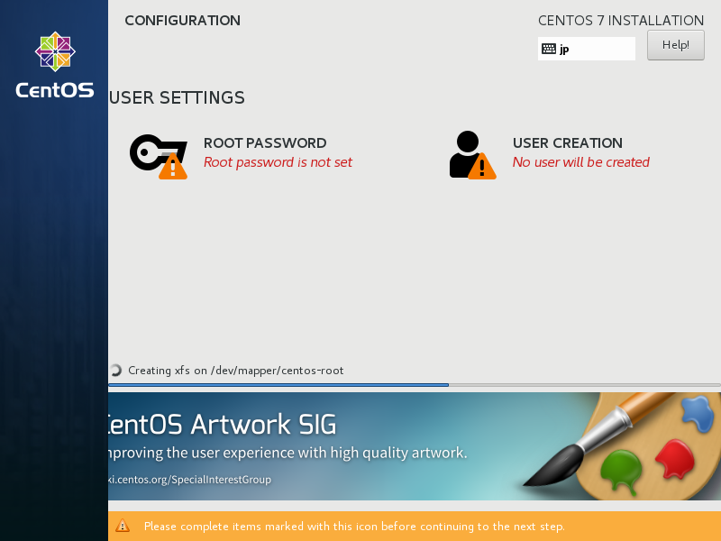
[16]. On the root password settings, input any password you like and click [Done] button to finish as follows.
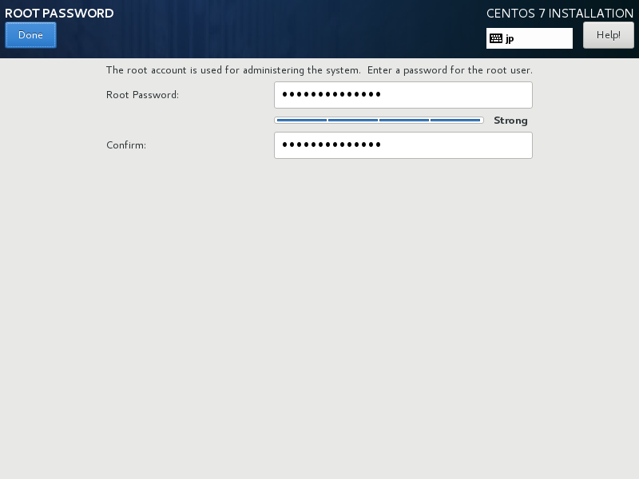
[17]. On the common user settings, input any user name and password you like and click [Done] button to finish as follows.
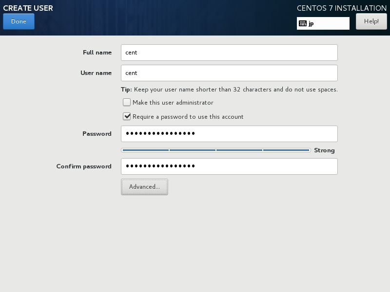
[18]. After finishing installation, click [Reboot] button.
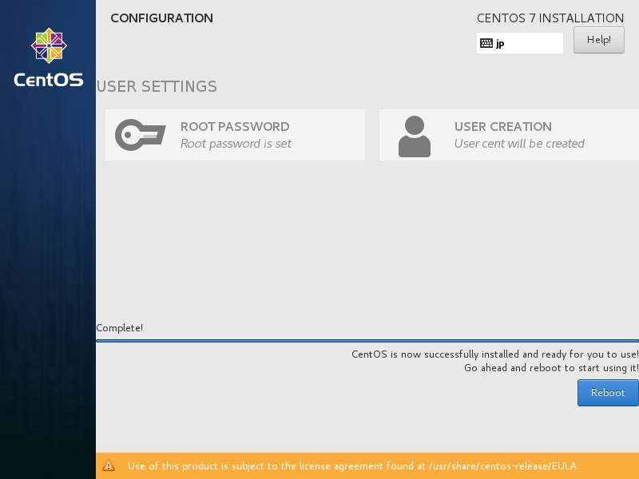
[19]. After rebooting, login prompt is shown like follows. login with root user and password you set during installation. Installing CentOS completes if you can login normally.
CentOS Linux 7 (Core)
Kernel 3.10.0-862.el7.x86_64 on an x86_64
localhost login:
(03) Initial Settings : Add an User
[1]. Add an User "cent" as an example below.
[root@dlp ~]# useradd cent
[root@dlp ~]# passwd cent
Changing password for user cent.
New UNIX password: # set password
Retype new UNIX password: # confirm
passwd: all authentication tokens updated successfully.
[root@dlp ~]# exit # logout
[2]. Try to switch to a user that was added above.
dlp login: cent # input user name
password: # password
[cent@dlp ~]$ su - # switch to root
Password: # root password
[root@dlp ~]# # just switched to root
[3]. Make a user be only a user who can switch to root as an administration user. (it's 'cent' in this example)
[root@dlp ~]# usermod -G wheel cent
[root@dlp ~]# vi /etc/pam.d/su
#%PAM-1.0
auth sufficient pam_rootok.so
# Uncomment the following line to implicitly trust users in the "wheel" group.
#auth sufficient pam_wheel.so trust use_uid
# Uncomment the following line to require a user to be in the "wheel" group.
# uncomment the following line
auth required pam_wheel.so use_uid
auth substack system-auth
auth include postlogin
account sufficient pam_succeed_if.so uid = 0 use_uid quiet
account include system-auth
password include system-auth
session include system-auth
session include postlogin
session optional pam_xauth.so
[4]. To forward to emails for root user to another user, set like follows. (it's 'cent' in this example)
[root@dlp ~]# vi /etc/aliases
# Person who should get root's mail
# last line: uncomment and change to a user
root: cent
[root@dlp ~]# newaliases # reload
(04) FireWall and SELinux
Initial Settings : FireWall
[1]. It's possible to show Service Status of FireWall like follows. (enabled by default)
[root@dlp ~]# systemctl status firewalld
● firewalld.service - firewalld - dynamic firewall daemon
Loaded: loaded (/usr/lib/systemd/system/firewalld.service; disabled; vendor preset: enabled)
Active: active (running) since Thu 2015-03-31 19:36:27 JST; 2s ago
Main PID: 1308 (firewalld)
CGroup: /system.slice/firewalld.service
└─1308 /usr/bin/python -Es /usr/sbin/firewalld --nofork --nopid
.....
.....
[2]. If you use FireWall service, it needs to modify settings of it because incoming requests for services are mostly not allowed by default. Refer to here to basic operation and settings to configure firewalld service.
[3]. If FireWall service does not need for you because of some reasons like that some FireWall Machines are running in your Local Netowrk or others, it's possbile to stop and disable it like follows.
# stop service
[root@dlp ~]# systemctl stop firewalld
# disable service
[root@dlp ~]# systemctl disable firewalld
rm '/etc/systemd/system/dbus-org.fedoraproject.FirewallD1.service'
rm '/etc/systemd/system/basic.target.wants/firewalld.service'
Initial Settings : SELinux
[4]. It's possible to show Status of SELinux (Security-Enhanced Linux) like follows. (enabled by default)
[root@dlp ~]# getenforce
Enforcing # SELinux is enabled
[5].If you enable SELinux, Refer to here for basic operations and configurations of SELinux.
[6]. If SELinux function does not need for you because of some reasons like that your server is running only in Local safety Network or others, it's possbile to disable it like follows.
[root@dlp ~]# vi /etc/selinux/config
# This file controls the state of SELinux on the system.
# SELINUX= can take one of these three values:
# enforcing - SELinux security policy is enforced.
# permissive - SELinux prints warnings instead of enforcing.
# disabled - No SELinux policy is loaded.
SELINUX=disabled # change to disabled
# SELINUXTYPE= can take one of these two values:
# targeted - Targeted processes are protected,
# minimum - Modification of targeted policy. Only selected processes are protected.
# mls - Multi Level Security protection.
SELINUXTYPE=targeted
# restart to apply new setting
[root@dlp ~]# reboot
(05) Networking
Initial Settings : Network Settings
[1]. Set static IP address to the server.
Replace the interface name "eth0" for your own environment's one.
# set hostname
[root@localhost ~]# hostnamectl set-hostname dlp.srv.world
# display devices
[root@localhost ~]# nmcli d
DEVICE TYPE STATE CONNECTION
eth0 ethernet connected eth0
lo loopback unmanaged --
# set IPv4 address ⇒ nmcli *** [IP address]
[root@localhost ~]# nmcli c modify eth0 ipv4.addresses 10.0.0.30/24
# set default gateway
[root@localhost ~]# nmcli c modify eth0 ipv4.gateway 10.0.0.1
# set DNS
[root@localhost ~]# nmcli c modify eth0 ipv4.dns 10.0.0.1
# set manual for static setting (it's "auto" for DHCP)
[root@localhost ~]# nmcli c modify eth0 ipv4.method manual
# restart the interface and reload the settings
[root@localhost ~]# nmcli c down eth0; nmcli c up eth0
Connection successfully activated (D-Bus active path: /org/freedesktop/NetworkManager/ActiveConnection/1)
# show settings
[root@localhost ~]# nmcli d show eth0
GENERAL.DEVICE: eth0
GENERAL.TYPE: ethernet
GENERAL.HWADDR: 00:0C:29:CD:9C:2D
GENERAL.MTU: 1500
GENERAL.STATE: 100 (connected)
GENERAL.CONNECTION: eth0
GENERAL.CON-PATH: /org/freedesktop/NetworkManager/ActiveConnection/0
WIRED-PROPERTIES.CARRIER: on
IP4.ADDRESS[1]: ip = 10.0.0.30/24, gw = 10.0.0.1
IP4.DNS[1]: 10.0.0.1
IP6.ADDRESS[1]: ip = fe80::20c:29ff:fecd:9c2d/64, gw = ::
# show status
[root@localhost ~]# ip addr show
1: lo: <LOOPBACK,UP,LOWER_UP> mtu 65536 qdisc noqueue state UNKNOWN
link/loopback 00:00:00:00:00:00 brd 00:00:00:00:00:00
inet 127.0.0.1/8 scope host lo
valid_lft forever preferred_lft forever
inet6 ::1/128 scope host
valid_lft forever preferred_lft forever
2: eth0: <BROADCAST,MULTICAST,UP,LOWER_UP> mtu 1500 qdisc pfifo_fast state UP qlen 1000
link/ether 00:0c:29:cd:9c:2d brd ff:ff:ff:ff:ff:ff
inet 10.0.0.30/24 brd 10.0.0.255 scope global eth0
valid_lft forever preferred_lft forever
inet6 fe80::20c:29ff:fecd:9c2d/64 scope link
valid_lft forever preferred_lft forever
[2]. Disable IPv6 if you do not need it.
[root@localhost ~]# vi /etc/default/grub
# line 6: add
GRUB_CMDLINE_LINUX="ipv6.disable=1 rd.lvm.lv=fedora-server/root.....
# apply changing
[root@localhost ~]# grub2-mkconfig -o /boot/grub2/grub.cfg
[root@localhost ~]# reboot
[3]. The example of interface name above is "eth0" but if your system is installed on phisical machine, the name is not "ethX" by default. Then If you'd like to use the network interface name "ethX", configure like follows.
[root@dlp ~]# vi /etc/default/grub
# line 6: add
GRUB_CMDLINE_LINUX="net.ifnames=0 rd.lvm.lv=fedora/swap rd.md=0.....
# apply changing
[root@dlp ~]# grub2-mkconfig -o /boot/grub2/grub.cfg
[root@dlp ~]# reboot
(06) Services
Initial Settings : Services
[1]. It's possible to make sure services' status like follows.
# display the list of services which are running
[root@dlp ~]# systemctl -t service
UNIT LOAD ACTIVE SUB DESCRIPTION
auditd.service loaded active running Security Auditing Service
avahi-daemon.service loaded active running Avahi mDNS/DNS-SD Stack
crond.service loaded active running Command Scheduler
dbus.service loaded active running D-Bus System Message Bus
getty@tty1.service loaded active running Getty on tty1
...
...
...
systemd-udevd.service loaded active running udev Kernel Device Manager
systemd-update-utmp.service loaded active exited Update UTMP about System Reboot/Shutdown
systemd-user-sessions.service loaded active exited Permit User Sessions
systemd-vconsole-setup.service loaded active exited Setup Virtual Console
tuned.service loaded active running Dynamic System Tuning Daemon
LOAD = Reflects whether the unit definition was properly loaded.
ACTIVE = The high-level unit activation state, i.e. generalization of SUB.
SUB = The low-level unit activation state, values depend on unit type.
39 loaded units listed. Pass --all to see loaded but inactive units, too.
To show all installed unit files use 'systemctl list-unit-files'.
# the list of all services
[root@dlp ~]# systemctl list-unit-files -t service
UNIT FILE STATE
auditd.service enabled
autovt@.service disabled
avahi-daemon.service enabled
blk-availability.service disabled
brandbot.service static
...
...
...
systemd-user-sessions.service static
systemd-vconsole-setup.service static
teamd@.service static
tuned.service enabled
wpa_supplicant.service disabled
125 unit files listed.
[2]. Stop and turn OFF auto-start setting for a service if you don'd need it. (it's smartd as an example below)
[root@dlp ~]# systemctl stop postfix
[root@dlp ~]# systemctl disable postfix
rm '/etc/systemd/system/multi-user.target.wants/postfix.service'
[3]. There are some SysV services yet. Those are controled by chkconfig like follows.
[root@dlp ~]# chkconfig --list
Note: This output shows SysV services only and does not include native
systemd services. SysV configuration data might be overridden by native
systemd configuration.
If you want to list systemd services use 'systemctl list-unit-files'.
To see services enabled on particular target use
'systemctl list-dependencies [target]'.
iprdump 0:off 1:off 2:on 3:on 4:on 5:on 6:off
iprinit 0:off 1:off 2:on 3:on 4:on 5:on 6:off
iprupdate 0:off 1:off 2:on 3:on 4:on 5:on 6:off
netconsole 0:off 1:off 2:off 3:off 4:off 5:off 6:off
network 0:off 1:off 2:on 3:on 4:on 5:on 6:off
# for exmaple, turn OFF auto-start setting for netconsole
[root@dlp ~]# chkconfig netconsole off
(07) Update System
[1] After installing CentOS, Update the system first if possible.
[root@dlp ~]# yum -y update
Loaded plugins: fastestmirror
Loading mirror speeds from cached hostfile
* base: ftp.iij.ad.jp
* extras: ftp.iij.ad.jp
* updates: ftp.iij.ad.jp
Resolving Dependencies
--> Running transaction check
---> Package NetworkManager.x86_64 1:0.9.9.1-13.git20140326.4dba720.el7 will be updated
---> Package NetworkManager.x86_64 1:0.9.9.1-23.git20140326.4dba720.el7_0 will be an update
...
...
...
--> Finished Dependency Resolution
Dependencies Resolved
= == == == == == == == == == == == == == == == == == == == == == == == == == == == == == == == == == == ==
Package Arch Version Repository Size
= == == == == == == == == == == == == == == == == == == == == == == == == == == == == == == == == == == ==
Installing:
kernel x86_64 3.10.0-123.4.2.el7 updates 29 M
Updating:
NetworkManager x86_64 1:0.9.9.1-23.git20140326... updates 1.4 M
NetworkManager-glib x86_64 1:0.9.9.1-23.git20140326... updates 369 k
NetworkManager-tui x86_64 1:0.9.9.1-23.git20140326... updates 190 k
gnutls x86_64 3.1.18-9.el7_0 updates 609 k
json-c x86_64 0.11-4.el7_0 updates 31 k
kernel-tools x86_64 3.10.0-123.4.2.el7 updates 669 k
kernel-tools-libs x86_64 3.10.0-123.4.2.el7 updates 609 k
kexec-tools x86_64 2.0.4-32.el7.centos.1 updates 320 k
libtasn1 x86_64 3.3-5.el7_0 updates 316 k
mariadb-libs x86_64 1:5.5.37-1.el7_0 updates 752 k
microcode_ctl x86_64 2:2.1-7.1.el7_0.1 updates 488 k
openssl x86_64 1:1.0.1e-34.el7_0.3 updates 705 k
openssl-libs x86_64 1:1.0.1e-34.el7_0.3 updates 939 k
selinux-policy noarch 3.12.1-153.el7_0.10 updates 340 k
selinux-policy-targeted noarch 3.12.1-153.el7_0.10 updates 3.8 M
tuned noarch 2.3.0-11.el7_0.3 updates 145 k
tzdata noarch 2014e-1.el7_0 updates 433 k
Transaction Summary
= == == == == == == == == == == == == == == == == == == == == == == == == == == == == == == == == == == ==
Install 1 Package
Upgrade 17 Packages
Total download size: 41 M
...
...
...
Verifying : kernel-tools-libs-3.10.0-123.el7.x86_64 34/35
Verifying : 1:NetworkManager-tui-0.9.9.1-13.git20140326.4dba720.el7.x86_64 35/35
Installed:
kernel.x86_64 0:3.10.0-123.4.2.el7
Updated:
NetworkManager.x86_64 1:0.9.9.1-23.git20140326.4dba720.el7_0 NetworkManager-glib.x86_64 1:0.9.9.1-2
NetworkManager-tui.x86_64 1:0.9.9.1-23.git20140326.4dba720.el7_0 gnutls.x86_64 0:3.1.18-9.el7_0
json-c.x86_64 0:0.11-4.el7_0 kernel-tools.x86_64 0:3.10.0-123.4.2.e
kernel-tools-libs.x86_64 0:3.10.0-123.4.2.el7 kexec-tools.x86_64 0:2.0.4-32.el7.cent
libtasn1.x86_64 0:3.3-5.el7_0 mariadb-libs.x86_64 1:5.5.37-1.el7_0
microcode_ctl.x86_64 2:2.1-7.1.el7_0.1 openssl.x86_64 1:1.0.1e-34.el7_0.3
openssl-libs.x86_64 1:1.0.1e-34.el7_0.3 selinux-policy.noarch 0:3.12.1-153.el7
selinux-policy-targeted.noarch 0:3.12.1-153.el7_0.10 tuned.noarch 0:2.3.0-11.el7_0.3
tzdata.noarch 0:2014e-1.el7_0
Complete!
(08) Add Repositories for yum
Initial Settings : Add Repositories
Add some useful external repositories to install useful softwares.
[1] Install a plugin to add priorities to each installed repositories.
[root@dlp ~]# yum -y install yum-plugin-priorities
# set [priority=1] to official repository
[root@dlp ~]# sed -i -e "s/\]$/\]\npriority=1/g" /etc/yum.repos.d/CentOS-Base.repo
[2] Add EPEL Repository which is provided from Fedora project.
[root@dlp ~]# yum -y install epel-release
# set [priority=5]
[root@dlp ~]# sed -i -e "s/\]$/\]\npriority=5/g" /etc/yum.repos.d/epel.repo
# for another way, change to [enabled=0] and use it only when needed
[root@dlp ~]# sed -i -e "s/enabled=1/enabled=0/g" /etc/yum.repos.d/epel.repo
# if [enabled=0], input a command to use the repository
[root@dlp ~]# yum --enablerepo=epel install [Package]
[3] Add CentOS SCLo Software collections Repository.
[root@dlp ~]# yum -y install centos-release-scl-rh centos-release-scl
# set [priority=10]
[root@dlp ~]# sed -i -e "s/\]$/\]\npriority=10/g" /etc/yum.repos.d/CentOS-SCLo-scl.repo
[root@dlp ~]# sed -i -e "s/\]$/\]\npriority=10/g" /etc/yum.repos.d/CentOS-SCLo-scl-rh.repo
# for another way, change to [enabled=0] and use it only when needed
[root@dlp ~]# sed -i -e "s/enabled=1/enabled=0/g" /etc/yum.repos.d/CentOS-SCLo-scl.repo
[root@dlp ~]# sed -i -e "s/enabled=1/enabled=0/g" /etc/yum.repos.d/CentOS-SCLo-scl-rh.repo
# if [enabled=0], input a command to use the repository
[root@dlp ~]# yum --enablerepo=centos-sclo-rh install [Package]
[root@dlp ~]# yum --enablerepo=centos-sclo-sclo install [Package]
[4] Add Remi's RPM Repository which provides many useful packages.
[root@dlp ~]# yum -y install http://rpms.famillecollet.com/enterprise/remi-release-7.rpm
# set [priority=10]
[root@dlp ~]# sed -i -e "s/\]$/\]\npriority=10/g" /etc/yum.repos.d/remi-safe.repo
# for another way, change to [enabled=0] and use it only when needed
[root@dlp ~]# sed -i -e "s/enabled=1/enabled=0/g" /etc/yum.repos.d/remi-safe.repo
# if [enabled=0], input a command to use the repository
[root@dlp ~]# yum --enablerepo=remi-safe install [Package]
(09) Configure vim
Initial Settings : Configure vim
Install and Configure vim that is more convenience than vi.
[1] Install vim
[root@dlp ~]# yum -y install vim-enhanced
[2] Set command alias. ( Apply to all users below. If you apply to a user, Write the same settings in '~/.bashrc' )
[root@dlp ~]# vi /etc/profile
# add at the last line
alias vi='vim'
[root@dlp ~]# source /etc/profile # reload
[3] Configure vim. ( Apply to a user below. If you applly to all users, Write the same settings in '/etc/vimrc', some settings are applied by default though. )
[root@dlp ~]# vi ~/.vimrc
" use extended function of vim (no compatible with vi)
set nocompatible
" specify encoding
set encoding=euc-jp
" specify file encoding
set fileencodings=iso-2022-jp,sjis
" specify file formats
set fileformats=unix,dos
" take backup
" if not, specify [ set nobackup ]
set backup
" specify backup directory
set backupdir=~/backup
" take 50 search histories
set history=50
" ignore Case
set ignorecase
" distinct Capital if you mix it in search words
set smartcase
" highlights matched words
" if not, specify [ set nohlsearch ]
set hlsearch
" use incremental search
" if not, specify [ set noincsearch ]
set incsearch
" show line number
" if not, specify [ set nonumber ]
set number
" Visualize break ( $ ) or tab ( ^I )
set list
" highlights parentheses
set showmatch
" not insert LF at the end of file
set binary noeol
" enable auto-indent
" if not, specify [ noautoindent ]
set autoindent
" show color display
" if not, specify [ syntax off ]
syntax on
" change colors for comments if it's set [ syntax on ]
highlight Comment ctermfg=LightCyan
" wrap lines
" if not, specify [ set nowrap ]
set wrap
(10) Configure sudo
Initial Settings : Configure sudo
Configure sudo to separate users' duty if some people share privileges.
It's unnecessarry to install sudo manually because it is installed by default even if "Minimal Install".
[1] Transfer root privilege to a user all.
[root@dlp ~]# visudo
# add at the last line: user 'cent' can use all root privilege
cent ALL=(ALL) ALL
# how to write ⇒ destination host=(owner) command
# make sure with the user 'cent'
[cent@dlp ~]$ /usr/bin/cat /etc/shadow
cat: /etc/shadow: Permission denied # denied normally
[cent@dlp ~]$ sudo /usr/bin/cat /etc/shadow
[sudo] password for cent: # own password
daemon:*:16231:0:99999:7:::
adm:*:16231:0:99999:7:::
lp:*:16231:0:99999:7:::
...
...
# just executed
[2] In addition to the setting [1], set that some commands are not allowed.
[root@dlp ~]# visudo
# near line 49: add aliase for the kind of shutdown commands
Cmnd_Alias SHUTDOWN = /sbin/halt, /sbin/shutdown, \
/sbin/poweroff, /sbin/reboot, /sbin/init
# add ( commands in aliase 'SHUTDOWN' are not allowed )
cent ALL=(ALL) ALL, !SHUTDOWN
# make sure with the user 'cent'
[cent@dlp ~]$ sudo /sbin/shutdown -r now
Sorry, user cent is not allowed to execute '/sbin/shutdown -r now' as root on dlp.srv.world. # denied normally
[3] Transfer some commands with root privilege to users in a group.
[root@dlp ~]# visudo
# near line 51: add aliase for the kind of user management comamnds
Cmnd_Alias USERMGR = /usr/sbin/useradd, /usr/sbin/userdel, /usr/sbin/usermod, \
/usr/bin/passwd
# add at the last line
%usermgr ALL=(ALL) USERMGR
[root@dlp ~]# groupadd usermgr
[root@dlp ~]# usermod -G usermgr cent
# make sure with the user 'cent'
[cent@dlp ~]$ sudo /usr/sbin/useradd testuser
[cent@dlp ~]$ # done normally
[cent@dlp ~]$ sudo /usr/bin/passwd testuser
Changing password for user testuser.
New UNIX password:
Retype new UNIX password:
passwd: all authentication tokens updated successfully.
[4] Transfer a command with root privilege to a user.
[root@dlp ~]# visudo
# add at the last line
cent ALL=(ALL) /usr/sbin/visudo
fedora ALL=(ALL) /usr/sbin/useradd, /usr/sbin/userdel, /usr/sbin/usermod, /usr/bin/passwd
ubuntu ALL=(ALL) /bin/vi
# make sure with the user 'cent'
[cent@dlp ~]$ sudo /usr/sbin/visudo
# possible to open and edit
## Sudoers allows particular users to run various commands as
## the root user, without needing the root password.
##
# make sure with the user 'fedora'
[fedora@dlp ~]$ sudo /usr/sbin/userdel -r testuser
[fedora@dlp ~]$ # done normally
# make sure with the user 'ubuntu'
[ubuntu@dlp ~]$ sudo /bin/vi /boot/grub/grub.conf
# possible to open and edit
# grub.conf generated by anaconda
#
# Note that you do not have to rerun grub after making changes to this file
# NOTICE: You have a /boot partition. This means that
[5] The logs for sudo are kept in '/var/log/secure', but there are many kind of logs in it. So if you'd like to keep only sudo's log in a file, Set like follows.
[root@dlp ~]# visudo
# add at the last line
Defaults syslog=local1
[root@dlp ~]# vi /etc/rsyslog.conf
# line 54: add
*.info;mail.none;authpriv.none;cron.none;local1.none /var/log/messages
# add the line, too
local1.* /var/log/sudo.log
[root@dlp ~]# systemctl restart rsyslog
(11) Cron's Setting
Initial Settings : Cron's Setting
[1] The regular jobs are controled by anacron by default. But anacron runs randomly in a day(at 3-22), so if you'd like to use cron and control jobs at a time, change like follows.
But Consider to change it if your server is virtualization environment. In virtual server, some virtual machines are running and if they executes regular jobs at a time all, the server will have many loading at a time. So it's necessary to change time on each machine by hand, or Keep anacron setting.
[root@dlp ~]# yum -y install cronie-noanacron
* there is time settings of Cron in /etc/cron.d/dailyjobs
[2] Remove anacron settings's package, if you installed cron's setting.
[root@dlp ~]# yum -y remove cronie-anacron